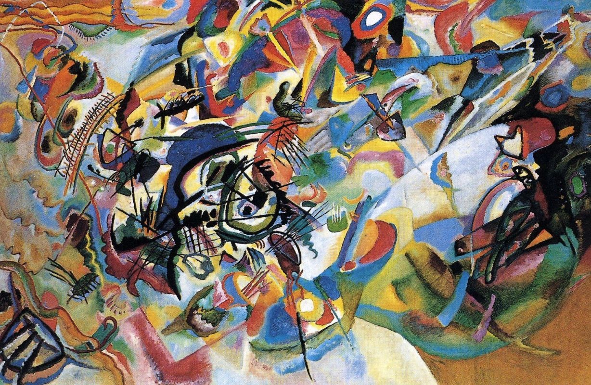
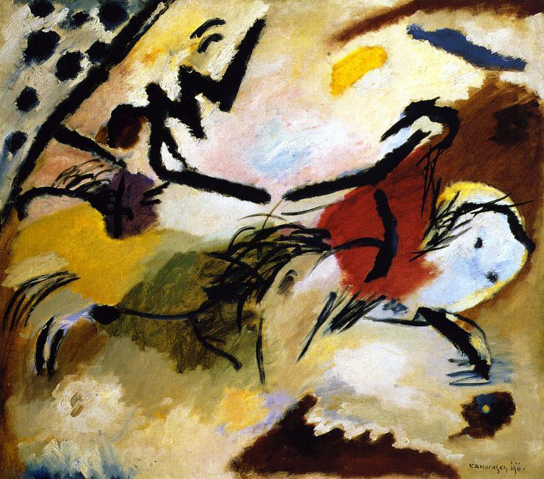
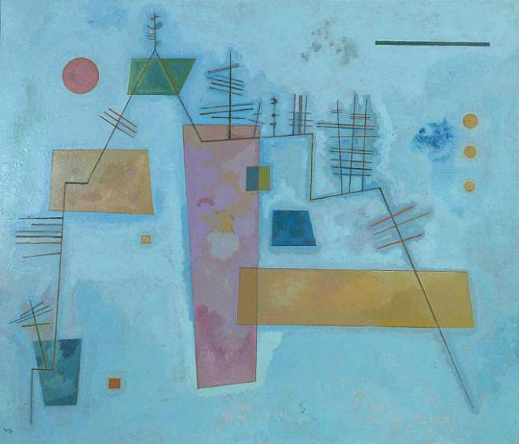

Небольшая, по сравнению с более поздними монументальными полотнами, картина «Синий всадник» была написана Кандинским в самом начале его художественной карьеры. Можно сказать, что эта работа – одна из самых важных и знаковых не только для раннего периода творчества Кандинского, но и для всего его творческого пути. В конце концов, именно это полотно дало название творческому объединению, созданному в 1911 году Василием Кандинским и Францем Марком.
Исследователь творчества Кандинского Мишель Кониль-Лакост писал о полотне «Синее небо» так: «Графическая строгость на этой картине уступает барочной множественности мотивов, они выглядят так, словно потеряли всякую связь со структурой, которая была определяющей в пространстве и долгое время была понятной и заметной только художнику, а его единственным долгом было сделать ее видимой для всех остальных. Странные плавающие фигуры хочется назвать существами. Художник не делает ничего, чтобы смягчить этот причудливый, гротескный эффект.
Василий Кандинский, детство и юность которого прошли в приморской Одессе, на протяжении всего своего творческого пути часто обращался к морской тематике. Лодки, корабли, паруса и разнообразные морские жители появляются на его картинах одинаково часто в самые разные периоды творчества (1, 2, 3, 4, 5, 6, 7, 8). Не является исключением и «Капризный», одна из поздних работ художника, центральную часть которой занимает большой корабль, чем-то похожий на футуристическую рыбу.

«Композиция VII», созданная Кандинским в 1913 году, считается одним из величайших шедевров абстрактного искусства. Эта работа является логическим продолжением Композиций V и VI, все три картины объединены темой Апокалипсиса. Элементы «Композиции VI» - Потоп и Воскрешение – просматриваются и в этой работе.
Кандинский считал эту картину одной из самых главных в своем творчестве – точным выражением своей теории об эмоциональных свойствах цвета, линии, формы. В период завершения работы над ней он преподавал в Баухаузе и работал над книгой «Точка и линия на плоскости», она вышла в 1926 году. С момента создания первой безымянной абстрактной акварели прошло 13 лет.

В 1911 году Василий Кандинский вместе с Францем Марком создает творческое объединение "Синий всадник", которое, несмотря на короткий срок существования, оказало внушительное влияние на всю немецкую живопись. За восемь лет до этого Кандинский написал постимпрессионистскую картину "Синий всадник", однако никогда не заявлял, что именно она дала название объединению. Художник объяснял, что все гораздо проще: "Мы оба любили синий цвет.

В 1930 году, когда была написана картина "Структура из углов", Василий Кандинский преподавал в Баухаусе. Его пригласил сюда в 1922 году основатель школы-мастерской Вальтер Гроппиус. Кандинскому были очень близки его идеи, и он с радостью согласился на предложение, тем более что в Баухаусе работали его давние друзья и коллеги.
Творческие методы Кандинского похожи на его биографию - постоянное движение вперед и много перемен. Интересно с этой точки зрения смотреть на его ранние работы, в которых можно заметить намеки на то, как кардинально изменится его стиль. Картина "Двое на лошади" на первый взгляд обычна, в ней есть фольклорные и сказочные мотивы, и, возможно, ностальгия.